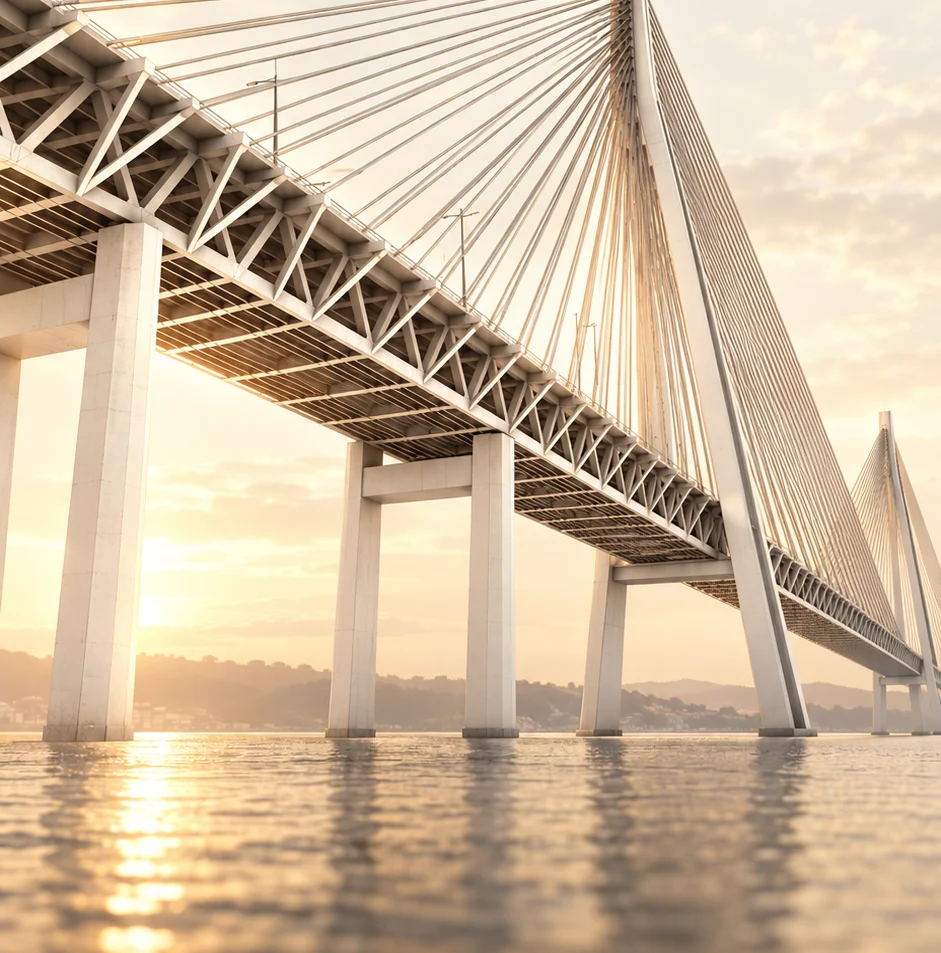

Two new bridges on Lisbon’s south bank: why have people waited decades, and when might they open?
Imagine two neighbouring cities separated by only a few hundred metres, yet driving from one to the other means a detour of roughly 16 kilometres.
That is the situation between Seixal and Barreiro, on the south bank of the Tagus near Lisbon.
Portugal intends to address it with not one but two new bridges.
The first would connect Seixal and Barreiro. The second, much larger crossing would link Barreiro directly to Lisbon by road and rail.

The remarkable part is that these projects have been discussed for decades. And one of the bridges actually existed once.
1. What exactly is planned?
The projects are connected, but they serve different purposes.
Bridge 1: Seixal–Barreiro
This is a local road crossing over the River Coina.
Its principal purpose is to eliminate a long detour and improve road travel between two neighbouring municipalities.
In July 2025 the government included the bridge in the infrastructure programme associated with the third Tagus crossing. It appears as a road bridge in the official diagram. Possible future public transport improvements, including the Metro Sul do Tejo, are being considered separately.
Bridge 2: Lisboa–Barreiro
This is the well-known Terceira Travessia do Tejo, or TTT.
It would connect the Chelas area of Lisbon to Barreiro and form part of the rail corridor between Lisbon and Madrid.
It is intended to carry:
- Cars.
- Conventional passenger trains.
- High-speed trains.
The government concept includes six road lanes and four railway tracks.
In this way, Barreiro could become an important transport hub connecting Lisbon, Seixal and other parts of Margem Sul.
2. Did you know that a Seixal–Barreiro bridge once existed?
The story begins in 1923.


Photo source: Wikimedia Commons / Hemeroteca Municipal de Lisboa
View archive footage of the bridge destroyed in 1969 (RTP Arquivos)
That year a railway bridge opened across the Coina between Seixal and Barreiro. It carried passengers and freight, offering residents a direct connection between the towns.
In September 1969 the bridge was seriously damaged in a collision with a vessel. Services stopped and the crossing was never rebuilt.
That was 57 years ago.
Over the following decades, several ideas emerged: restore a pedestrian and cycling link, build a road bridge or extend the light-rail network.
By 1999 a road crossing was included in plans for the future Estrada Regional 10. Construction, however, never began.
After decades of discussion, the project is back on the agenda.
3. When was the Lisboa–Barreiro bridge first proposed?
The larger bridge has an equally interesting history.

Photo source: Wikimedia Commons, late-19th-century archival photograph
As early as 1991, specialists studied possible sites for new Tagus crossings.
The options included:
- Sacavém–Montijo.
- Chelas–Barreiro.
- Algés–Trafaria.
Ultimately, the Vasco da Gama Bridge opened in 1998 while Chelas–Barreiro remained on paper.
The idea was not abandoned. In 1995, the state began legally reserving land for the future bridge, to ensure other development did not prevent it.
In 2000 the government again commissioned design work. In 2008 it formally confirmed Chelas–Barreiro as the alignment for a combined road and rail crossing.
In 2009 the bridge was close to entering the construction phase.
On 30 March 2009 an international tender was announced for the Lisboa–Poceirão railway infrastructure, including the third crossing.
The expectation then was that work would begin in 2010 and high-speed Lisboa–Madrid service would start in 2013.
In November 2008 project representatives had also publicly identified 2013 as the bridge's completion date.
Those plans never materialised.
4. Five reasons why the bridges have not been built
Reason 1. The financial crisis
The global financial crisis began in 2008 and hit Portugal particularly hard.
Borrowing became more expensive, investors struggled to raise funding, and the state had to reconsider major infrastructure spending.
In September 2010 the government formally cancelled the tender for the Lisboa–Poceirão high-speed railway section, which included the future crossing.
The official decision cited the worsening economic situation and financing difficulties among its reasons.
In effect, a project once expected to finish in 2013 was halted before construction began.
Reason 2. Existing bridges and the Lusoponte contract
This is where matters become more complicated.
Lusoponte operates the 25 de Abril and Vasco da Gama bridges.
Its concession agreement included exclusive rights to operate road crossings in a defined area of the Tagus.
Building a third road bridge therefore required the government to address its relationship with the concessionaire.
In 2009 government representatives explained that the tender for the road component depended on talks with Lusoponte.
This does not mean the company can block any new bridge indefinitely. However, contractual commitments create additional legal and financial issues.
Reason 3. A bridge is only one part of a much bigger transport network
A bridge alone will not solve every problem.
Imagine a modern six-lane bridge between Lisbon and Barreiro.
Where would all those cars go when they leave the bridge?
And how would the new tracks connect to existing railway lines?
For the crossing to work, approach roads, rail links and other transport infrastructure must also be built or upgraded.
That is why the state is studying the project as a complete infrastructure system.
Reason 4. Complex engineering and environmental studies
A major bridge across the Tagus estuary is an exceptionally complex engineering task.
Ground conditions and pier positions must be assessed, together with effects on shipping, nature and nearby communities.
Planners also need to estimate road and rail demand and establish whether the benefits justify the costs.
These studies take time, and some procedures are required by Portuguese and European law.
Reason 5. Political decisions and changing priorities
Portugal has revisited the third-bridge proposal many times over recent decades.
Successive governments have reconsidered transport priorities, funding options and implementation dates.
For example:
- In 2008 the project received formal approval.
- In 2009 a tender was announced.
- In 2010 the tender was cancelled.
- In 2019 politicians again proposed delivering it by 2030.
- In 2022 the crossing appeared in long-term rail planning extending to 2050.
- In 2024 the government again commissioned studies.
The result is an unusual picture: a bridge project can outlast several governments, economic crises and even generations of residents.
In fairness, this is not just bureaucracy. Portugal faced real financial constraints, complex contracts and the challenge of coordinating a major rail programme.
For residents of Seixal and Barreiro, though, the outcome is unchanged: there is still no direct road connection between the cities.
5. What changed in 2024–2026?
This time the proposal became more closely tied to high-speed Lisboa–Madrid rail and the future Luís de Camões airport.
In May 2024 the government instructed Infraestruturas de Portugal to carry out the studies needed for the third crossing.
In July 2025 the authorities presented a plan including the Barreiro–Seixal road bridge within the wider infrastructure scheme.
On 23 October 2026 Diário do Distrito reported that Infraestruturas de Portugal was already carrying out preliminary studies for the future Seixal–Barreiro crossing. The report was based on statements by the deputy mayor of Barreiro.
This is important news, with one qualification: preliminary studies do not mean construction has begun. The report gave neither an approved construction start date nor an opening date.
Studies are also continuing for the larger Lisboa–Barreiro crossing. According to information published by Infraestruturas de Portugal, the environmental assessment documentation was expected to be submitted by the end of 2026.
6. When might the bridges be built? All the known dates
These are three distinct stages. Studies or announcements do not mean construction has started.
Official timetable and forecasts
| When | What is planned | Status |
|---|---|---|
| End of 2026 | Submission of environmental studies for the Lisboa–Madrid railway, including TTT | IP plan |
| End of 2026 | Preparation of a decision on the management model for the crossing | Government instruction |
| End of 2027 | Completion of studies for the Lisboa–Évora line, including the third Tagus crossing | EU decision |
| End of 2028 | End of the funded cycle of TTT and high-speed rail studies | Study programme |
| 2030 | Direct Lisboa–Madrid rail service of approximately five hours | EU target |
| 2034 | Full Lisboa–Madrid high-speed line, including the new crossing, around three hours | EU target |
| Seixal–Barreiro | No official construction start or opening date for the road bridge | Unconfirmed |
Sources: EU Decision 2025/2198, Infraestruturas de Portugal and Sustentável 2030 programme.
There is an important subtlety here.
The aim is to provide a roughly five-hour Lisboa–Madrid service in 2030, but that does not imply that the third bridge will already be open. The first stage is expected to rely on existing and upgraded infrastructure.
By 2034, under the European timetable, the full high-speed line including the new Tagus crossing is intended to be in service.
Even these dates depend on studies, funding, permits and construction.
When will construction start on Lisboa–Barreiro?
There is still no formally approved construction start date.
In 2026 infrastructure minister Miguel Pinto Luz spoke of an estimated four-to-five-year construction period for the larger bridge, linking its completion to the new airport and high-speed railway.
Working backwards from a 2034 target and a four-to-five-year construction period suggests starting around 2029–2030.
That is my inference from the announced timeframes, not an official construction start date.
There is even less certainty about Seixal–Barreiro. Although included in the wider infrastructure concept, no public construction or opening schedule has been confirmed.
7. How would everything connect?
In a simple diagram, the connections would look like this:
This is a simplified illustration of connections between the cities, not an exact engineering alignment.
For residents of Margem Sul, the effects could be substantial.
Someone living in Seixal, for example, could potentially reach Barreiro more quickly. The new Lisboa–Barreiro crossing would create an additional route into the capital.
Rail development could also improve connections between Lisbon, Setúbal, Alentejo and other regions. Infraestruturas de Portugal suggests the new railway corridor could reduce Lisboa–Setúbal journey times to about 30 minutes.
The precise routes, travel times, fares and dates still have to be confirmed.
8. How could this affect property prices?
For property, projects of this scale are particularly interesting.
Today buyers consider not just size, condition and price, but also how long it takes to get to work, school or Lisbon.
If accessibility improves, some districts may become more attractive.
Potential effects:
- Seixal: easier connections to Barreiro and surrounding areas.
- Barreiro: potentially quicker journeys to Lisbon, a larger transport interchange and more interest from residents and businesses.
- Other parts of Margem Sul: changing traffic flows and shifts in the appeal of individual neighbourhoods.
But it is important not to jump to conclusions.
Announcing a bridge does not automatically raise property prices.
The real effect depends on approach-road locations, transport interchange access, new rail stations and actual journey times.
New infrastructure may also have negative effects for individual properties: noise, heavier road traffic and large junctions under construction.
A property valuation should therefore take account not just of the future bridge but of where the surrounding infrastructure would actually go.
9. Should we believe the bridges will finally be built?
In my view, Lisboa–Barreiro has stronger grounds for delivery now than at many points in the past.
The main reason is that its role goes far beyond travel between Lisbon's two banks.
The crossing is linked to Europe's high-speed rail network and the future international airport.
There is also a European target year for the project: 2034.
Yet Portuguese infrastructure history teaches us a lesson: until construction tenders are launched, contracts signed and building works started, completion dates remain uncertain.
That is especially true for Seixal–Barreiro, for which there is still no confirmed opening date.
Instead of a conclusion
Perhaps in a few years we will think of the Seixal–Barreiro drive as an ordinary five-to-ten-minute journey.
And travelling from Barreiro to Lisbon may no longer mean a lengthy detour or taking the ferry.
For now, however, the two new bridges mainly exist in documents, studies and plans.
The question remains: can Portugal finally turn decades of promises into real infrastructure?
Key documents and material
1. The 2008 government decision on the Chelas–Barreiro alignment. 2. The 2010 official decision cancelling the tender. 3. The 2024 government decision restarting studies. 4. The EU's 2025/2198 decision, with a timetable to 2034. 5. Current IP environmental study status. 6. The 23 October 2026 report about preliminary studies on Seixal–Barreiro.